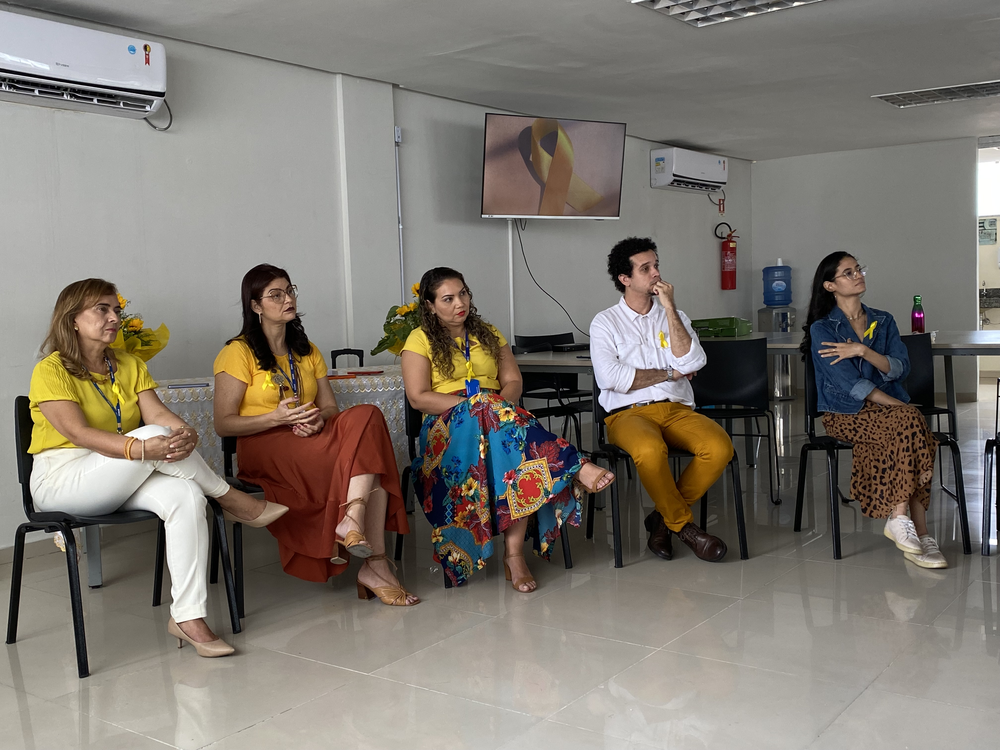

Projeto Equilíbrio em Movimento
Promover saúde física e mental por meio de práticas integrativas, autocuidado e bem-estar emocional.

Promover saúde física e mental por meio de práticas integrativas, autocuidado e bem-estar emocional.

Apoiar jovens e adultos na descoberta de propósito, no desenvolvimento de habilidades e na conquista de autonomia financeira e realização profissional.
Participe de nossos projetos como voluntário. Cadastre-se em nossa página e faça parte da mudança!
Ajude a manter nossos projetos com uma doação.